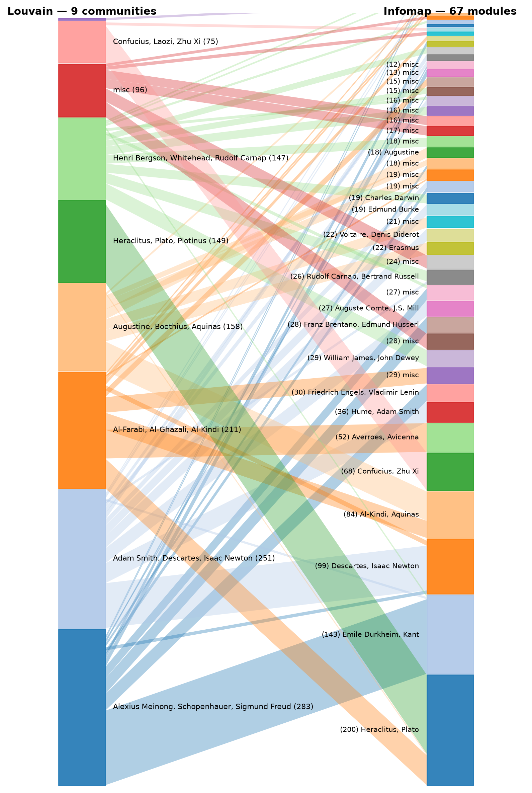
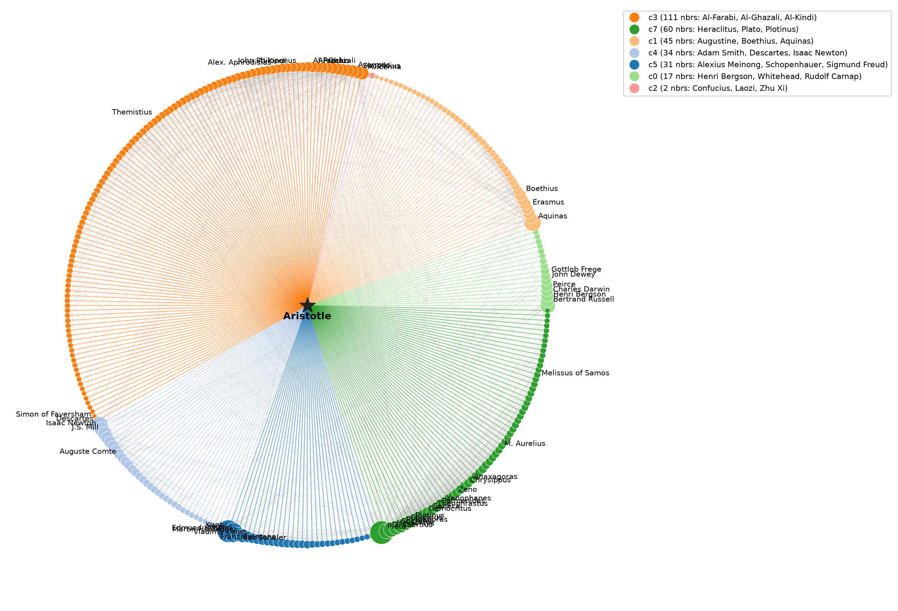
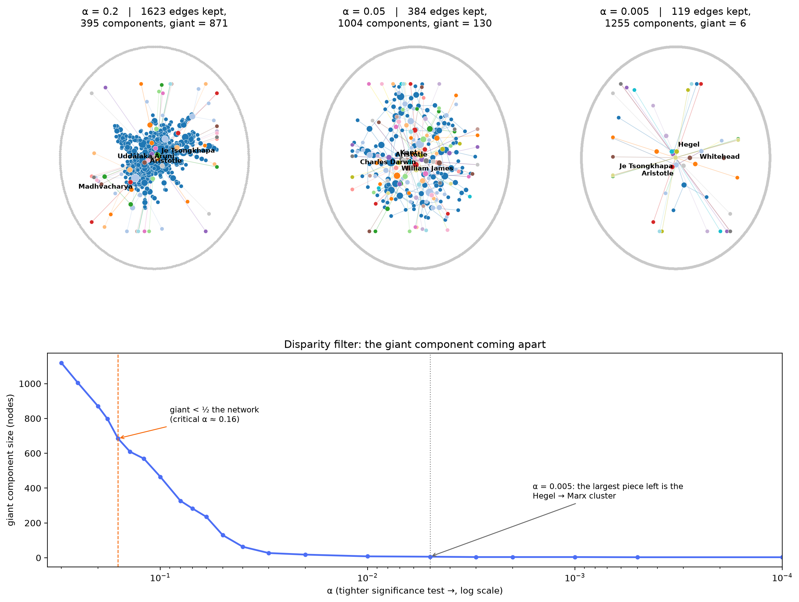
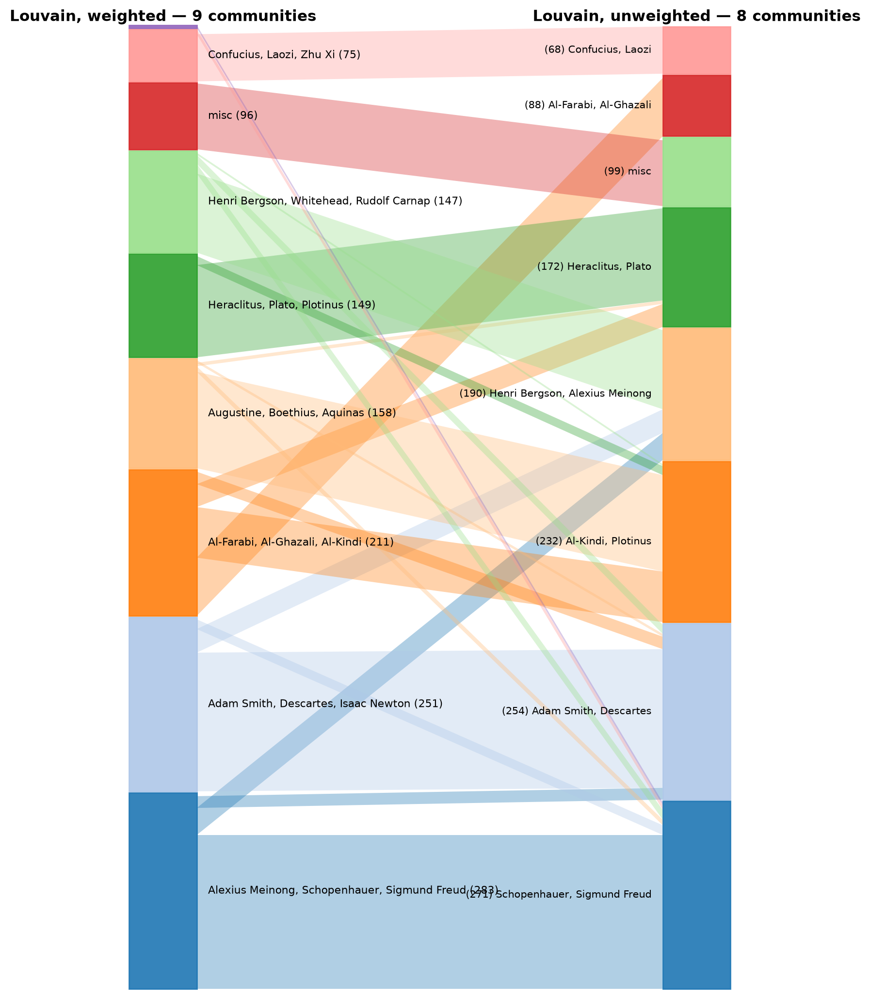

Nine tribes, sixty-six schools, and the philosopher holding the backbone
This week the course playground handed us a new network — 1,444 philosophers born before
1900, linked by Wikipedia citations — and four questions about community structure. We ran two
community algorithms and made them fight, asked a 2,300-year-old node which tradition he
belongs to, filtered the network down to its statistically irreplaceable backbone and watched
the giant component come apart, and checked what the weights were doing all along.
For Weeks 1–3 we mined Marvel superheroes. This week the course's shared playground released a
frozen crawl of 1,444 philosophers on English Wikipedia — everyone in the
seven "list of philosophers born in …" century lists up to the end of the 19th century —
with 11,135 directed article-to-article links, each carrying its count of repeated links as a
weight. Each philosopher also carries metadata: the era list they appear in and any of
Wikipedia's subfield lists they're also on (metaphysicians, logicians, ethicists …).
Everything below runs on the same preprocessing: treat links as mutual (a citation made in
either direction connects two thinkers), sum the two directions' weights, and work on the
giant component of that undirected weighted network — 1,374 philosophers and 9,139 edges. The
remaining 70 sit outside it, unanchored. Every number and figure was computed once, offline,
in analysis/build_week4.py (NetworkX, python-igraph's Infomap, scikit-learn for
NMI) and frozen into data/philosophers/week4_summary.json — the browser only
looks numbers up and draws them.
Giant component1,374 of 1,444
Louvain → communities9
Infomap → modules67
NMI between them0.613
Louvain vs Infomap: who tells the better history of philosophy?
Same network, two objective functions, two histories. Louvain maximizes
modularity and finds 9 communities of 4–283 philosophers.
Infomap minimizes the map equation and finds 67 modules —
its ten largest are shown right, the remaining 57 catch the long tail of small, very
internally-coherent schools. Their agreement (NMI = 0.613) is real but partial, and the
disagreements are exactly where the history of philosophy gets interesting.

Where Louvain and Infomap agree — and where they don't. Left: Louvain's 9 communities
(labelled with their most famous members). Right: Infomap's 67 modules (the ten largest
labelled). Ribbon width = shared philosophers; ribbon colour = the Louvain community it
starts from. Both produced offline by analysis/build_week4.py from
data/philosophers/week4_summary.json.
Look at what each method's groups are. Louvain's nine communities are, almost without
exception, centuries:
283 members, 215 of them from the 19th century — Meinong, Schopenhauer, Freud, Bruno Bauer, Kierkegaard
251 members, mostly 17th–18th — Descartes, Newton, Spinoza, Adam Smith, Comte
211 members, mostly 11th–14th and 1st–10th — Al-Farabi, Al-Ghazali, Al-Kindi, Proclus, Alexander of Aphrodisias
158 members, the Latin Christian middle — Augustine, Boethius, Aquinas, Ockham, Erasmus
149 members, mostly BC — Plato, Socrates, Heraclitus, the Stoics, Plotinus
147 members, almost all 19th — Russell, Frege, Peirce, James, Dewey, Carnap
96, 75 and 4 stragglers — the last containing an entire Chinese cluster (Confucius, Laozi, Zhu Xi)
That reading is visible in the metadata: Louvain's partition aligns with the century-bucket
era labels at purity 0.576 — nearly six philosophers in ten sit
in a community whose majority era matches their own. Infomap hits
0.686 — but it reaches that by doing the opposite thing: instead of grouping
by century, its fine modules purify each era from inside. Its modules are
recognizably schools:
Hume − Adam Smith − George Berkeley (36) — the Scottish Enlightenment
Marx − Engels − Bruno Bauer − Lenin (30) — the Hegelian left
William James − Dewey − Peirce (29) — pragmatism
Husserl − Brentano (28) — the phenomenology seedbed
Averroes − Avicenna − Al-Farabi − Al-Ghazali (52) — the falsafa
Kant − Schopenhauer − Spinoza − Durkheim (143) — the one big mixed block, which we return to below
Our answer: Infomap tells the better history of philosophy, in the same way
good intellectual history is written — in schools, movements and correspondence networks,
not in centuries. In network terms the trade-off is a classical one. Modularity suffers from
the resolution
limit: a school that is internally tight to its members but weakly wired to everything else —
a 30-node Hegelian left — is below modularity's merging threshold next to a 283-node 19th-century
super-community, so Louvain swallows it. The map equation's flow-based objective has no such
threshold: a module pays for itself whenever a random walker spends measurably more time inside
it than its size would predict, so it happily keeps 57 modules alive in the sparse tail —
exactly where the small, distinctive schools live. The cost of that sensitivity: one in six
philosophers ends up in a module too tiny to mean much (38 of Infomap's 67 modules have
fewer than 12 members, versus Louvain's clean 9). Louvain tells the textbook's history,
Infomap tells the citation network's — and it's no coincidence that ours matches the
years the module usually spans. A school is contemporaneous; a century is not a mechanism.
Aristotle is the most-connected node in the network: 300 link-partners in the giant component
(521 counting weight). Louvain files him under the 211-member "ancient & Islamic
commentary" community. That is a textbook answer. His links tell a different one:
111 of his 300 neighbours sit in his own community — Alexander of Aphrodisias, Simplicius, Philoponus, Themistius, Al-Farabi, Avicenna, Averroes: the commentators
60 point into the ancient Greek isle — Plato, Socrates, the Stoics, Diogenes Laertius, Epicurus
45 into the Latin Christian world — Augustine, Boethius, Aquinas, Erasmus
34 into early modernity — Descartes, Newton, J.S. Mill, Comte
31 into the German century — Kant, Hegel, Husserl, Brentano, Heidegger, Lenin
17 into the analytic/pragmatist camp — Russell, Frege, Peirce, Dewey
2 into the Chinese cluster
His links touch seven of Louvain's nine communities. No other node in the network does that.
The figure below draws every one of those 300 links (gray = links between his neighbours)
coloured by the community of the philosopher on the other end.

Aristotle's 300 links, coloured by the other endpoint's Louvain community (legend gives the
community's neighbour count and famous members; node size scales with degree). Computed in
analysis/build_week4.py.
For a second, sharper instrument we ran k-clique communities over the giant
component and collected every k-clique community (k = 5) that contains him. Six
survive, and one of them is a 467-node blob that simply says "Aristotle is, overlappingly, friends with more
or less everyone." The other five are the money result — each of them is a tradition
hand him down, and no two are the same tradition:
The 12th-century translation effort (9) — Calcidius, Boethius, Adelard of Bath, William of Conches, Thierry of Chartres, Anselm, John of Salisbury: the portal through which Aristotle (and via him Plato) reentered Latin Europe
Medieval logic (8) — Boethius, Albert of Saxony, Buridan, Oresme, Bradwardine, Marsilius of Inghen, Ockham
Persian falsafa (6) — Al-Farabi, Avicenna, Mir Damad, Mulla Sadra, Jamal al-Din al-Afghani
The argument. "Which tradition is Aristotle really in" is a trick question,
and the network agrees. Two lenses, two answers, one conclusion: the Louvain citation-weight
answer is the commentary tradition (his articles' densest co-citation web is Late
Antique and Islamic — Alexandrian commentators, falsafa, and the scholastics citing them), and
the k-clique list says his membership is plural by construction: he is a articulation
point of the network, in the technical sense — every tradition reaches modernity through
him, so every tradition's clique contains him. In network terms Aristotle isn't in a tradition,
he is a one-node school whose eventual members keep disagreeing with each other
about what he said.
The backbone: filtering 9,139 edges to the ones that matter
Weights are counts of repeated links — but which edges are carrying real weight and
which are just noise? The disparity filter (Serrano, Boguñá & Vespignani, 2009)
asks, for every node, whether its share pij of its total outgoing link
weight concentrated on one neighbour could plausibly arise if its strength were spread
uniformly at random over its k links. The tail probability is
αij = (1 − pij)k−1; keep an edge
if it is significant from either endpoint at level α, and watch what survives.

Top: the disparity-filter backbone at three significance levels — α = 0.2 (1,623 edges, one
giant of 871), α = 0.05 (384 edges, giant down to 130), α = 0.005 (119 edges, the largest
remaining piece has 6 members). Grey dots ring the outside: philosophers whose every backbone
link is gone. Bottom: the giant-component curve across the full α scan (tighter test to the
right). Computed with analysis/build_week4.py.
The giant doesn't shatter at one dramatic moment — it erodes, fast. Scanning α from
loose to strict:
α = 0.20giant 871 · 1,623 edges
α = 0.16 — the breakgiant 685, first under half
α = 0.05giant 130 · 384 edges
α = 0.005giant 6 · 119 edges
The break is at α ≈ 0.16. At α = 0.165 the largest connected piece still holds
707 philosophers; at α = 0.16 it holds 685 — the first moment no single backbone spans half the
network. Around that crossing the pieces fall away fast: giant 327 by α = 0.08, 130 by
α = 0.05, six by α = 0.005.
And the philosopher whose links keep it alive? Right up to the last few edges, the answer is
always: Aristotle. His backbone degree is 58 at α = 0.2 (Kant, second, has
35), 11 at α = 0.05 (next: Kant 9, Marx 8), and even at α = 0.005 — when the network above
has dissolved — he shares the capping 3-edge lead with Hegel and Marx. The last two
multi-node fragments of all:
The Hegel → Marx cluster (6) — Hegel, Marx, Engels, Bruno Bauer, Hinrichs, Menéndez Pelayo. Its weakest load-bearing link is Bauer → Marx (11 repeated links; dies when α drops below ≈ 0.0035), and with it the last literarily-political structure goes.
The doxographic tail (4) — Simon of Faversham, Aristotle, Heraclitus, Plutarch — held together by Aristotle → Heraclitus (13 repeated links, dies at ≈ 0.00052) and, the single last connection standing anywhere in the whole network, Heraclitus → Plutarch (17 repeated links, dies at ≈ 0.0001).
Reading it in network terms: the magnitude of the αij for a
philosopher's links measures how much of that philosopher's own link budget each target
absorbs. Aristotle's are big spenders (521 total weighted links, spread over 300 targets as
the network's largest per-target commitments), so they stay statistically certain longer than
anyone else's. When the giant finally comes apart around α ≈ 0.16, the edges that survive are
overwhelmingly his — and the network's last heartbeat is a Plutarch–Heraclitus tie: the late
antique doxographers, cataloguing each other from a millennium away, are the final
statistically-irreplaceable thread in the history of philosophy.
All of the community machinery so far used the weights. Throw them away — treat every repeated
and every single link identically — and Louvain finds 8 communities instead of 9. Between the
weighted and unweighted partitions, NMI = 0.650: substantial agreement, far
from identity. And 1,217 of the 1,374 philosophers (88.6%) end up in a different
Louvain community number when the weights vanish — though part of that is communities
being renumbered, which is why the figure below shows the actual pairwise membership flows:

Louvain with weights (left) vs without (right), ribbons = shared philosophers. The broad
ribbons are stable sovereignty — the 19th-century German block, the early-modern block and the
Chinese cluster barely move — while the middle of the diagram is where the weights do their
work. Generated by analysis/build_week4.py.
The pattern in the moves is not random: weights amplify polarization within
traditions. The clearest example is the Islamic golden age. Unweighted, Louvain puts
Al-Farabi, Al-Ghazali and Avicenna together in one 88-member community; weighted, the
falsafa keep their 52-member module and the ancient commentary tradition (Al-Kindi,
Alexander of Aphrodisias, Proclus) becomes a distinct partner — same overall neighbourhood,
finer subdivisions. Similarly, the 19th-century block splits by persuasion when weights
return: with the weights on, Aristotle's neighbours split cleanly by citation habit: the falsafa
(Al-Farabi, Al-Ghazali, Avicenna, Averroes) sit with Al-Kindi and Alexander of Aphrodisias and
Proclus in one 211-member commentary mega-community, and the enormous Plato–Plotinus
BC-and-commentary soup unweights apart
What the weights are: repeated links in a Wikipedia article — an author who
returns to the same colleague across the page. Those repeats are how philosophers actually
signal who they were reading. An unweighted network can see that Hume knew Smith;
only the weighted network can see that Hume's article returns to Smith eleven times
while visiting almost everyone else once. So: weighted Louvain tells the same broad eras (NMI 0.65 is
high), but draws the intra-era boundaries along who-cited-whom rather than
who-was-alive-when — which is, again, the Infomap story.
We asked whether two community algorithms tell the same history (they don't:
NMI 0.613, 9 tribes vs 67 schools, and the disagreement is modularity's resolution limit
working exactly as theory says); which tradition Aristotle is really in (all of them: his 300
links touch seven of nine communities, and his k-clique communities span the translation
movement, medieval logic, falsafa, Renaissance heterodoxy and phenomenology); where the
statistically irreplaceable backbone is (critical α ≈ 0.16, with Aristotle carrying the
most surviving backbone links at every stage until the very last edges and Heraclitus→Plutarch
the final link);
and whether the weights change the story (NMI 0.650 — the broad strokes survive, but the
weights re-draw the lines inside eras along citation lines).
What surprised us most was the ending of the backbone experiment. We expected
the final survivors to be a hub — Kant, maybe, whose links to 20th-century textbooks are
everywhere. Instead the network's very last standing structure is two islands: a 19th-century
Hegel-to-Marx cell, and a four-node cluster of Aristotle, Heraclitus, Plutarch and a
14th-century Oxford scholastic — a late-antique doxography book club, outliving every
modern school. The disparity filter doesn't find who is famous. It reports who certain other
people could not stop citing.
Caveats: this is a Wikipedia link network, which is a measure of present-day
attention as much as historical influence — 20th-century analytic philosophers central to that
attention economy are only partially represented here, since the roster is capped at
pre-1900 birth years. And αij is computed per node versus that node's own link
strength, so ties between low-degree nodes (our ever-present leaf triangles near the end)
pass the significance bar trivially — which is why we read the backbone's final fragments
rather than its last stragglers.